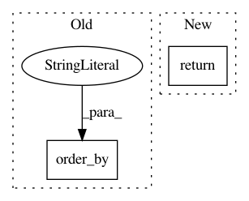

9faa5955e84e99e275c2b01aec584c0f7752ce7c,common/data_refinery_common/models/organism.py,Organism,get_objects_with_qn_targets,#Any#,186
Before Change
def get_objects_with_qn_targets(cls):
Return a list of Organisms who already have valid QN targets associated with them.
from data_refinery_common.models import ComputationalResultAnnotation
organism_ids = list(ComputationalResultAnnotation.objects.filter(data__is_qn=True).values_list("data__organism_id", flat=True).order_by("data__organism_id"))
organisms = Organism.objects.filter(id__in=organism_ids)
return organisms
After Change
@classmethod
def get_objects_with_qn_targets(cls):
Return a list of Organisms who already have valid QN targets associated with them.
return Organism.objects.all().filter(qn_target__isnull=False)
class Meta:
db_table = "organisms"
In pattern: SUPERPATTERN
Frequency: 3
Non-data size: 2
Instances
Project Name: AlexsLemonade/refinebio
Commit Name: 9faa5955e84e99e275c2b01aec584c0f7752ce7c
Time: 2019-08-05
Author: arielsvn@gmail.com
File Name: common/data_refinery_common/models/organism.py
Class Name: Organism
Method Name: get_objects_with_qn_targets
Project Name: MTG/freesound
Commit Name: c5227861460b2b937266ccafff76f2731265c424
Time: 2017-11-10
Author: alastair.porter@upf.edu
File Name: forum/models.py
Class Name: Thread
Method Name: set_last_post
Project Name: okfn-brasil/serenata-de-amor
Commit Name: fea0802288563f301958b4cdeafd2562ded808b9
Time: 2018-09-19
Author: cuducos@users.noreply.github.com
File Name: jarbas/chamber_of_deputies/management/commands/tweet.py
Class Name: Command
Method Name: handle